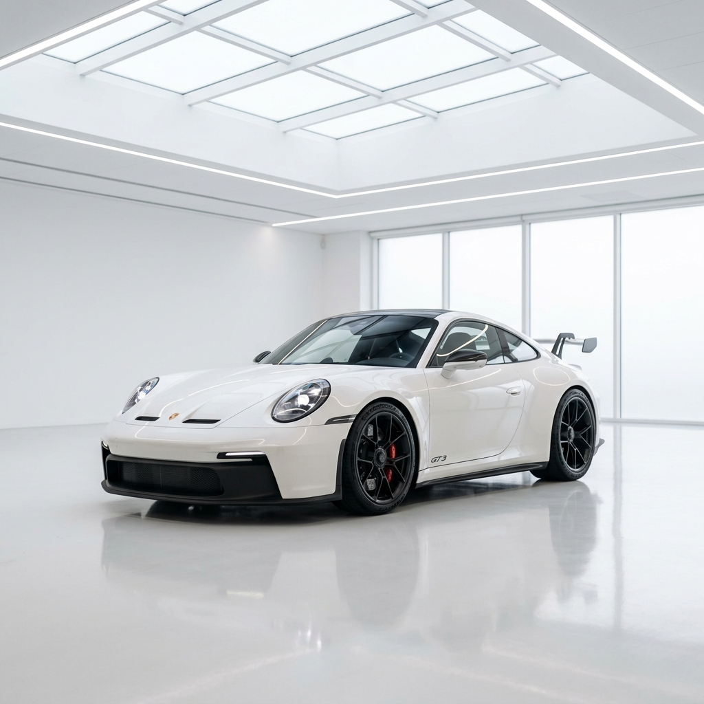
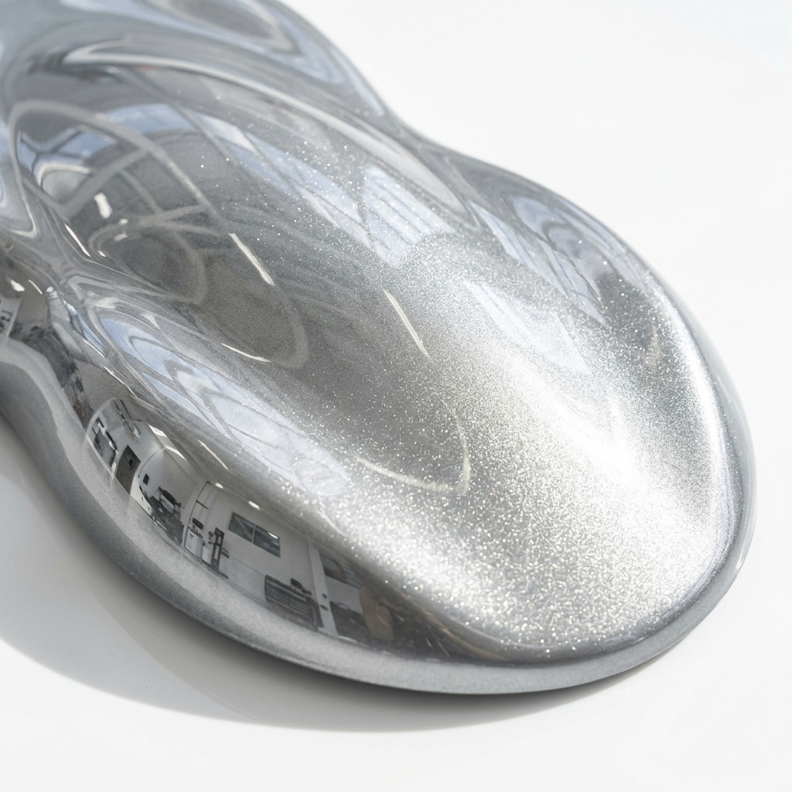

Sua referência em funilaria e pintura premium em Guarulhos. Tecnologia e precisão para quem não aceita menos que o melhor.
Utilizamos os melhores materiais e equipamentos do mercado mundial.
Técnicas de repuxo e alinhamento que respeitam as propriedades originais do metal.
Laboratório de cores próprio e cabine de pintura de última geração com secagem térmica.
Polimento técnico, vitrificação e detalhamento para um brilho profundo e duradouro.

Nossa fundação é baseada na transparência e no compromisso com a satisfação total do cliente.
Oferecemos garantia estendida em todos os serviços de funilaria e pintura.
Seu veículo monitorado 24h enquanto cuidamos de cada detalhe.
Clique abaixo e inicie seu atendimento personalizado agora pelo WhatsApp.
Chamar no WhatsAppEstamos localizados em um ponto estratégico de Guarulhos.
Av. Brigadeiro Faria Lima, 1886
Jardim Cocaia, Guarulhos - SP, 07130-000
Segunda à Sexta: 08:00 - 18:00